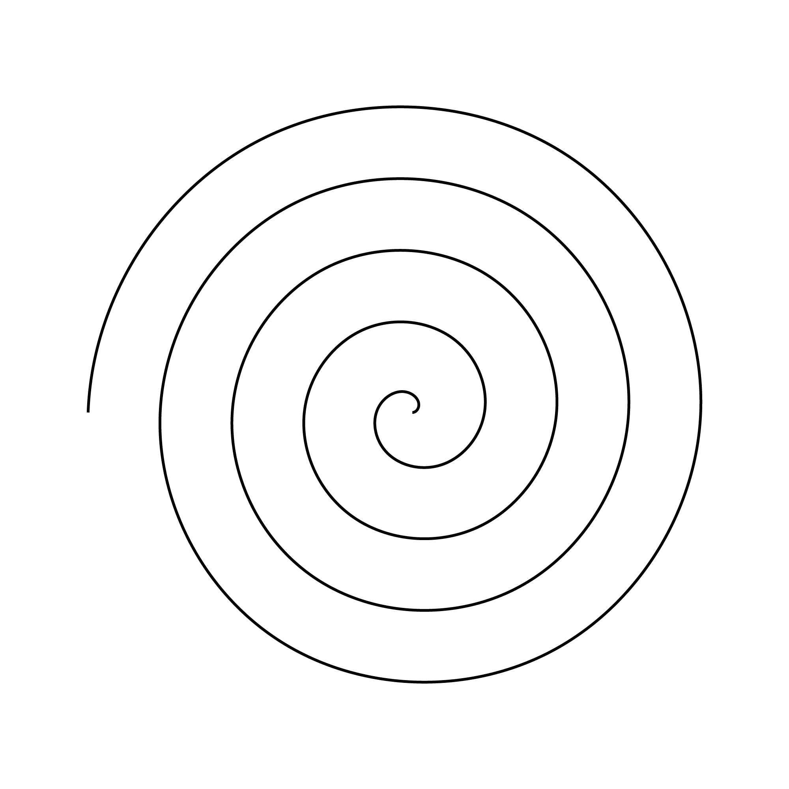

Fall 2025, UX Research Methods
Aug 26, 28 — Living research...
Sept 2, 4 — A product can be...
Sept 9, 11 — Building for change...
Sept 16, 18 — Building in community...
Sept 23, 25 — Maintainance practices...
Sept 30, Oct 2 — Layers of Change...
Oct 9 — Presenting Project 1...
Oct 14, 16 — Intermission...
Oct 21, 23 — Starting Project 2...
Oct 28, 30 — Continuing Project 2...
Nov 4, 6 — Ideating and Desiging Project 2...
Nov 11, 13 — Concept Testing Project 2...
Nov 18, 20 — Prototyping Project 2...
Nov 25 — Presenting Project 2...
Dec 2, 4 — Publication celebration...
Readings and Media
Fall 2025
Washington University in St. Louis
Sam Fox School of Design & Art
DESIGN5260-02, UX Research Methods for Design
Tuesdays & Thursdays, 1–3:50pm
Weil Hall, Room 120
Laurel Schwulst
, laurels@wustl.edu
Download syllabus
↓

→
(Visual) Principles for Screen